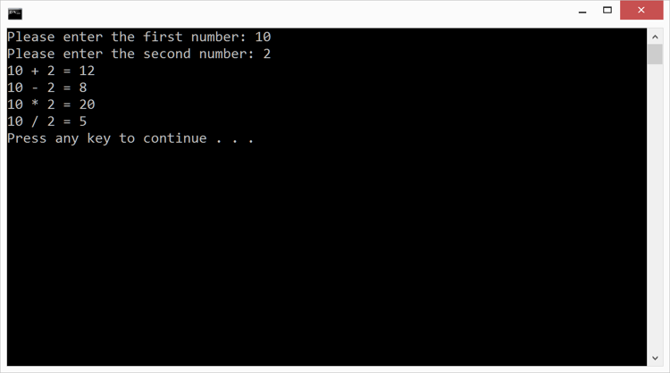

Duration
20 minutes
Homework goals
In this homework, you will write a program that asks the user for two numbers and then provides the sum, difference, product, and quotient. Check if the denominator is zero and if so do not do the division but display an error message to the Console.
The images below show two sets of sample output. In the first one, both input values are valid. In the second one, the denominator of the division is zero; note how the program detects this case and outputs an appropriate message.

Required assets
The provided Homework Resources/Completed folder contains a completed version of the program you can use to check your work. Please make sure you have this folder before you begin.
Steps
Below are the high-level instructions to implement the program.
Arithmetic
- Create a new Console Project in Visual Studio. Name the Project and Solution Arithmetic.
-
Your entire program will be written inside
Maindefined in the file Program.cs. -
Please delete the
Console.WriteLinethat Visual Studio generated insideMain. - Prompt the user to enter the first value, read it in as a string, and convert it into an integer. Repeat the procedure for the second input value.
-
Calculate the sum (
+), difference (-), product (*), and quotient (/) of the two values. Display the results in the Console window as shown in the sample output above. Take care to avoid divide-by-zero. - Build and run the program to test your work. Be sure your program works correctly when zero is entered as the second value.